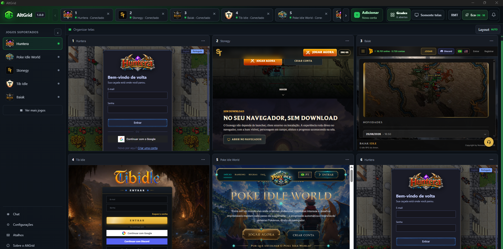
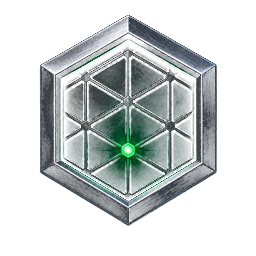

Grades inteligentes
De uma conta a uma operação inteira.
Use Auto, 1×1, 1×2, 2×1, 2×2, 3×2 e 3×3. O AltGrid reorganiza as sessões sem recarregar os jogos.
AltGrid 1.2.3 disponível no Windows
Abra, organize e alterne entre várias sessões de jogos sem transformar sua área de trabalho em um caos. Leve, direto e construído para quem joga com múltiplas contas.

Feito para múltiplas contas
Menos janelas espalhadas, menos cliques repetidos e mais espaço para acompanhar o que realmente importa.
Grades inteligentes
Use Auto, 1×1, 1×2, 2×1, 2×2, 3×2 e 3×3. O AltGrid reorganiza as sessões sem recarregar os jogos.
Sessões vivas
Cada conta mantém armazenamento, login e contexto próprios enquanto você muda de tela ou de layout.
Somente telas
Esconda barras e controles secundários para transformar praticamente toda a janela em área útil.
Login completo
Fluxos de autenticação externos abrem com segurança e devolvem você à sessão correta.
Comunidade integrada
Converse sem sair do AltGrid. Fotos dos jogos e badges de plano deixam cada perfil fácil de reconhecer.
Performance sob seu controle
Defina FPS por sessão ou ative o Eco Mode. A conta em uso recebe prioridade e as demais trabalham em ritmo reduzido.
Simples desde o primeiro clique
Use os presets atualizados remotamente ou informe uma URL personalizada.
Cada conta recebe uma sessão isolada e continua salva para o próximo acesso.
Organize automaticamente ou escolha o layout ideal para sua tela e seu plano.
Planos sem apagar suas contas
O limite controla sessões abertas ao mesmo tempo. Suas contas e configurações continuam preservadas.

A base completa do AltGrid, sem prazo para acabar e sem excluir configurações.
Feito para quem precisa acompanhar uma grade maior com desempenho ajustável.
A camada intermediária para quem quer expandir sem abrir mão da eficiência.
O nível máximo para fundadores que apoiam o crescimento do AltGrid.
Valores, limites atualizados e disponibilidade aparecem dentro do aplicativo. Pagamentos externos podem ser processados por Pix.
Baixe do seu jeito
Use a mesma conta no Windows e no Android. Escolha a versão adequada para seu dispositivo.
Android em destaque
O AltGrid para Android mantém suas sessões organizadas dentro do aplicativo e permite alternar entre contas sem depender de várias abas abertas.
Versão desktop completa com grades, sessões independentes, escala de interface por conta e proxy exclusivo Founder.
Acesso integrado às sessões, zoom automático e alternância rápida entre contas em uma interface feita para toque.
O AltGrid já foi enviado à Microsoft e está aguardando a revisão e a liberação pública na loja.
Aguardando revisão da MicrosoftAntes de instalar
Essas mensagens são diferentes conforme o sistema. Só prossiga quando o download tiver sido iniciado pelos botões oficiais desta página.
O SmartScreen pode mostrar “Editor desconhecido” enquanto o instalador direto constrói reputação e recebe assinatura.
Como o APK é distribuído diretamente, o Android ou o Play Protect pode pedir uma confirmação adicional.
O envio foi concluído, mas a Microsoft ainda está revisando o aplicativo. Até a aprovação, a página pode não abrir ou mostrar indisponibilidade.
Perguntas frequentes
Não. Os limites são aplicados às sessões abertas simultaneamente. Contas e configurações continuam salvas.
Não. A mudança de layout preserva as sessões e apenas reorganiza suas janelas na interface.
A sessão em uso mantém maior fluidez, enquanto contas em segundo plano podem operar com um limite menor de FPS.
Não. A autenticação do AltGrid é gerenciada com segurança pelo provedor de autenticação, e as senhas não são armazenadas manualmente pelo aplicativo.
Sim. Além dos jogos disponibilizados remotamente, você pode criar uma sessão com uma URL HTTP ou HTTPS válida.
A evolução acontece junto
Compartilhe feedback, acompanhe novidades e receba suporte diretamente no Discord.